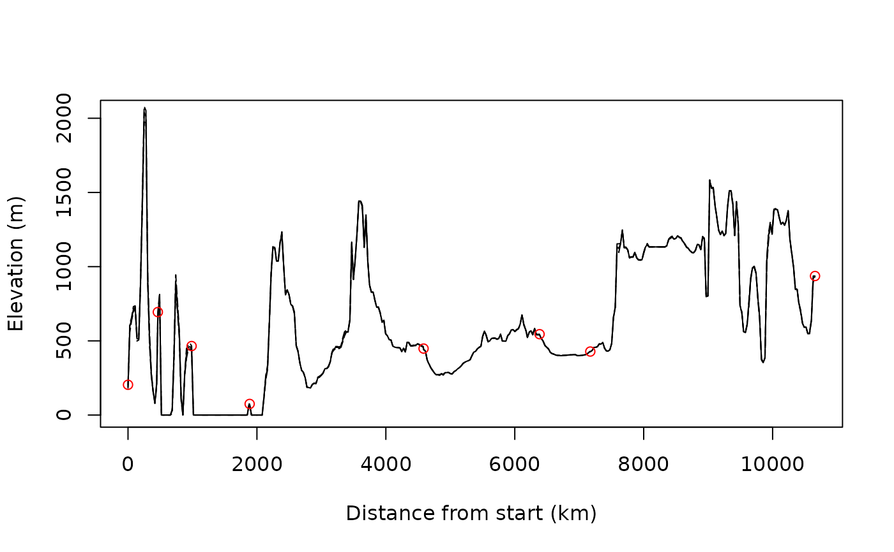

This function is a wrapper of the GeoPressureAPI elevationPath entry point. It queries the ground
elevation from SRTM (SRTM90_V4) along a polyline
specify by path.
Because the position are often defined on a relative coarse scale (e.g., 0.25° ~ 29km),
you can request the elevation at a specify resolution defined by scale and return pre-defined
percentile of the elevation at this resolution.
The returned data.frame provide the ground elevation along the path with a resolution defined by
sampling_scale.
Usage
path2elevation(
path,
scale = 4,
sampling_scale = scale,
percentile = c(10, 50, 90),
timeout = 60 * 5,
debug = FALSE
)Arguments
- path
a GeoPressureR
pathdata.frame- scale
spatial resolution of the SRTM to use to query the elevation.
scaleis defined as the number of pixels per 1° latitude-longitude (seetag_set_map()for details). Native resolution of SRTM is 30m.- sampling_scale
spatial resolution of the point along the polyline on which the SRTM is estimated. Same unit as
scale.- percentile
percentile of the ground elevation distribution found within each grid cell of the SRTM at the resolution defined by
scale.50corresponds to the median.- timeout
maximum duration to make the httr request (see
httr2::req_timeout())- debug
logical to display additional information to debug a request
Value
A data.frame containing
stap_idnumeric value corresponding to the ratio of distance between position of known staplonlatdistancedistance in km along the path starting at the first stap_id
Examples
# Create a path
path <- data.frame(
lon = c(8.47, 9.41, 9.01, -0.91, 14.24, 27.30, 34.39, 30.00),
lat = c(48.89, 44.78, 40.07, 37.68, 17.33, 7.32, 8.09, -23.13),
start = as.POSIXct(
c(
"2017-05-01 00:42", "2017-05-03 01:22", "2017-05-03 22:47", "2017-05-06 03:32",
"2017-05-07 01:12", "2017-05-07 22:32", "2017-05-09 21:52", "2017-05-10 21:12"
),
tz = "UTC"
),
end = as.POSIXct(
c(
"2017-05-02 22:12", "2017-05-03 20:12", "2017-05-06 02:47", "2017-05-06 23:22",
"2017-05-07 17:42", "2017-05-09 20:27", "2017-05-10 19:57", "2017-05-11 21:17"
),
tz = "UTC"
),
stap_id = seq(1, 8)
)
plot_path(path)
elevation <- path2elevation(path)
plot(elevation$distance, elevation$X50,
type = "l",
ylab = "Elevation (m)", xlab = "Distance from start (km)"
)
lines(elevation$distance, elevation$X10, lty = 5)
lines(elevation$distance, elevation$X90, lty = 5)
id <- elevation$stap_id %% 1 == 0
points(elevation$distance[id], elevation$X90[id], col = "red")
